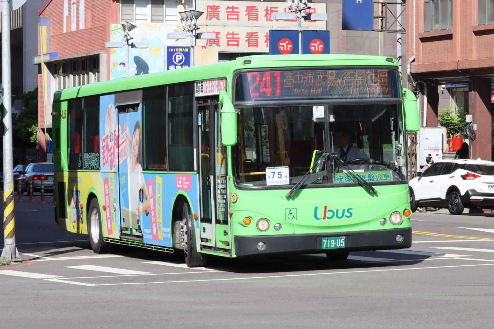
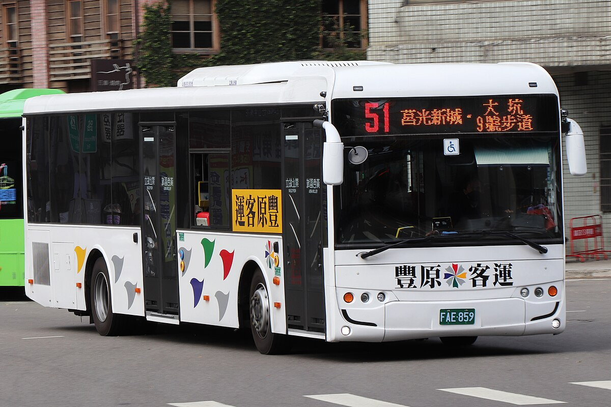
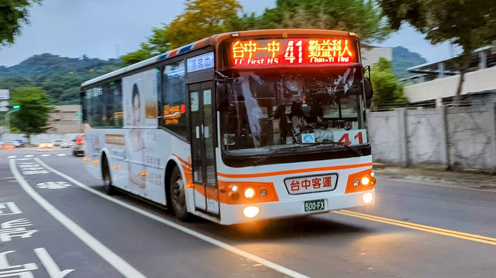

下一站，蛻變
回到首頁
單車
大智北一街➡️大智北路➡️新民街➡️復興路四段➡️復興東路➡️樂業路➡️祥順路一段➡️新平路一段➡️環太東路➡️大源路➡️中山路二段477巷186弄➡️明秀西路➡️明秀南路，右轉即可到達目的地。
241公車
從台中火車站步行4分鐘至台中車站C月台轉乘，經過31分鐘至三中心站下車，再步行4分鐘到達目的地。

汽車
從復興路四段左轉進入祥順路一段，右轉進入中山路二段，右轉進明秀北路，左轉進明秀東路，左轉即可到達。
51公車
從台中火車站步行3分鐘到新時代購物中心站搭公車經過24分鐘到三中心站下車，再步行5分鐘到達目的地。

41公車
從台中火車站步行6分鐘到第一廣場轉乘，經過29分鐘後在三中心站下車，再步行5分鐘後抵達。
